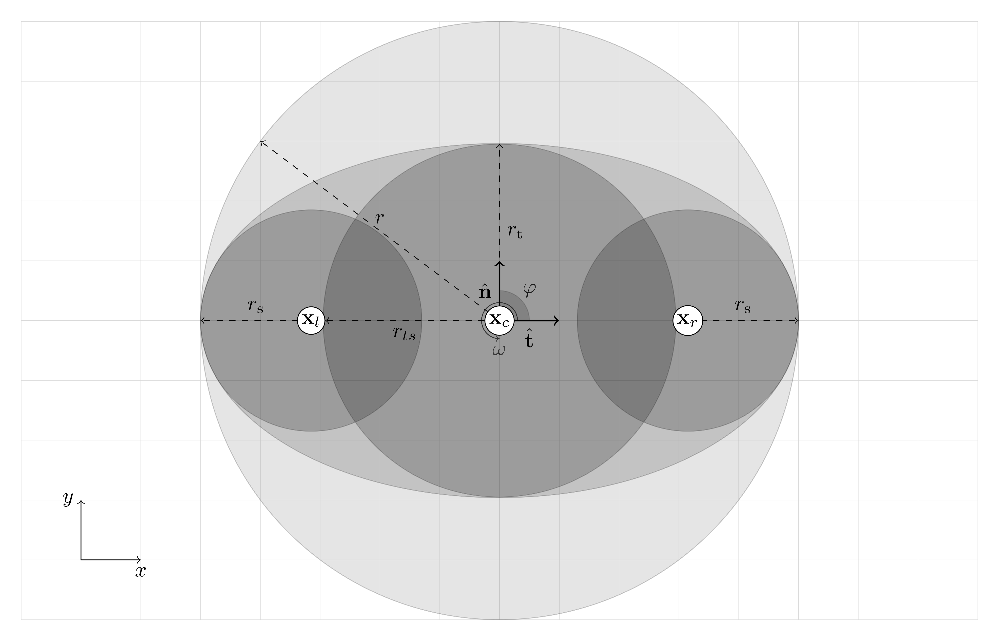

8.1. Mathematical Foundations¶
Mathematically crowd dynamics or crowd simulation is defined as a function
that maps current state of agent \(A\) and time \(t \in \mathbb{R}^{+}\) to new state \(A\). Common states to be manipulated are agents spatial and rotational motion. States are model dependent and more can be defined as needed, keeping in mind the principle of Occam’s razor.
8.1.1. Time¶
Time is denoted
When numerically solving differential equation we use adaptive discrete timestep from a defined interval
In dynamics differential in respect of time is sometimes denoted
8.1.2. Geometry¶
Spatical geometry of the crowd simulation is defined in two dimensional space \(\mathbb{R}^{2}\). Geometrical constructs that are used in this simulation are point, curve and surface. For numerical and practical purposes simulations use simple geometric object such as polygons, linestrings and circles.
Point is defined
Linestring is linearly connected set of points
Linerings have their end point connected as well. Polygon is a set of the area that is covered by linering. Shapely.
For theoretical purposes Bézier curves may also be considered but may be too complex for simulations.
8.1.2.1. Domain¶
Domain is surface that contains all objects in the simulation such as agents and obstacles. Defined
Agents that move outside the domain will turn inactive.
8.1.2.2. Obstacle¶
Obstacle is a static curve that is unpassable (agent cannot go through). Defined
8.1.2.4. Narrow bottleneck¶
A special case of exit is a narrow bottleneck. Defined as line from point \(\mathbf{p}_0\) to \(\mathbf{p}_1\). Width of the door
Width of the exit must sufficient for agent to pass through. Lower and upper bounds for the exit width are
Capacity estimation of unidirectional flow through narrow bottleneck. Capacity of the bottleneck increases in stepwise manner. Simple estimation of capacity
More sophisticated estimation [hoogen2005], [seyfried2007]
where
- \(\left \lfloor \cdot \right \rfloor\) is the floor function
8.1.3. Agent¶
Set of agents that are subject to motion usually referred just agents is denoted
Common convention denoting individual agent is \(i \in A\) or \(j \in A\). Area occupied by agents
8.1.3.1. Model¶
Three different models for she shape of the agent from above are displayed in the figure.
All agents have mass \(m > 0\), center of the mass \(\mathbf{x} \in \Omega\) and moment of inertia \(I > 0\). Orientable agents have body angle of \(\varphi \in [-\pi, \pi]\). Normal and tangential unit vectors for agent
Velocity of the agent’s center of mass \(\mathbf{v}\) and rotational velocity \(\omega\) around center of mass.
8.1.3.2. Circular model¶
Simplest of the models is circular model without orientation. Circle is defined with radius \(r > 0\) from the center of mass.
8.1.3.3. Elliptical model¶
Ellipse is defined two axes \(r\) and \(r_t\). Elliptical model is mentioned but not used because complexity of its equation. Preferred model is three circle model which is more realistic and the fact that approximations required to compute elliptical model are based on circular arcs would make it similar to compute. [fourarc2001]
8.1.3.4. Three circle model¶
Three circle model models agent with three circles which represent torso and two shoulders. Torso has radius of \(r_t\) and is centered at center of mass \(\mathbf{x}\) and shoulder have both radius of \(r_s\) and are centered at \(\mathbf{x} \pm r_{ts} \mathbf{\hat{e}_t}\). [langston2007]
8.1.4. Initial configuration¶
Initial placement of agents inside a polygonal surface, a spawn denoted by \(\mathcal{S} \subset \Omega\), uses random uniform sampling.
- Triangulation
- Random Triangle
- Random point inside triangle
| [fourarc2001] | Qian, W. H., & Qian, K. (2001). Optimizing the four-arc approximation to ellipses. Computer Aided Geometric Design, 18(1), 1–19. http://doi.org/10.1016/S0167-8396(00)00033-9 |
| [hoogen2005] | Hoogendoorn, S. P., & Daamen, W. (2005). Pedestrian Behavior at Bottlenecks. Transportation Science, 39(2), 147–159. http://doi.org/10.1287/trsc.1040.0102 |
| [langston2007] | Langston, P. A., Masling, R., & Asmar, B. N. (2006). Crowd dynamics discrete element multi-circle model. Safety Science. http://doi.org/10.1016/j.ssci.2005.11.007 |
| [seyfried2007] | Seyfried, A., Rupprecht, T., Passon, O., Steffen, B., Klingsch, W., & Boltes, M. (2007). New insights into pedestrian flow through bottlenecks. Transportation Science, 43:395–406, 43(3), 16. http://doi.org/10.1287/trsc.1090.0263 |
| [obstacle2015] | Cristiani, E., & Peri, D. (2015). Handling obstacles in pedestrian simulations: Models and optimization. Retrieved from http://arxiv.org/abs/1512.08528 |